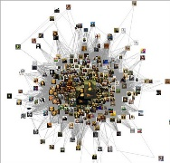
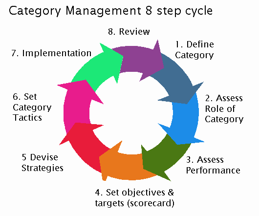

WaterWorks

Water game to educate players about how the water system works.
PageRank
Page rank algorithm implemented as a part of distributed systems course.
Assistive Technology
Mobile application currently in design to assist elderly people with daily activities.
Virtual Assistant
Web application to help professors in organizing their data, manage files and display analytics.
TPACE
An SAP implementation project tracker on Microsoft SharePoint Server 2010 for Tata Consultancy Services.
DataMining
Comparative Analysis on Classification Algorithms for the Human Activity Recognition Dataset.
Artificial Intelligence
Board games such as Yahtzee and Rameses. Map coloring program with backtracking.
Asymptotic Algorithmic Analysis

Programmatically determined the number of steps involved with execution of string matching algorithms.
Movie Recommendation System
Built, trained and evaluated a recommendation system for MovieLens dataset with KNN algorithm.
Data Streaming
Research study of synopses in Approximate Query Processing techniques for streaming data - Wavelets and Sketches.
XINU Operating System
Implemented XINU operating system process & memory management, networking and filesystem.
SharePoint Migration
Enhanced and migrated custom web application from ASP.NET and MOSS platforms to SharePoint Server 2010.